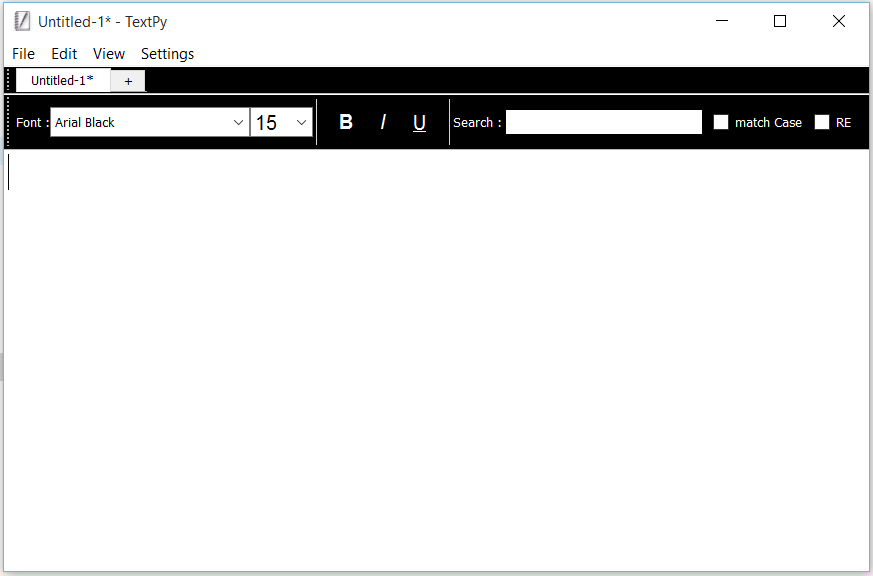

TextPy
A light weight text editor created using python and PyQT5

Download latest version
Text search with options for case sensitive search and regular expressions
Option to work on multiple files at once uisng different tabs
Auto-Save option for automatically saved any unsaved files
Options to customize the colors of the different elements of the UI
Option to position the tab bar and the tool bar according to user preference
Several keyboard shortcuts to perform different actions
Features
Check out the Github Repositry !!